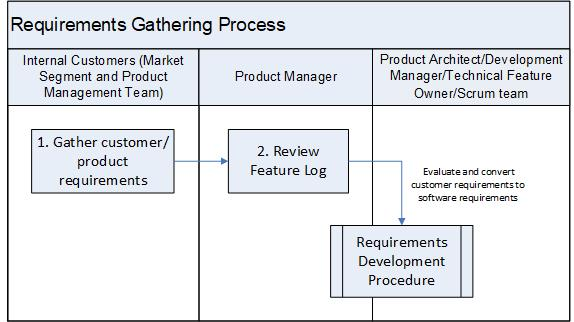

Requirements Gathering Process¶
The process describes a sequence of activities performed to gather customer requirements.
The Product Manager is responsible for this process.
Entry Criteria/Inputs |
|
Exit Criteria/Outputs |
|
Stakeholders¶
Role |
Responsibilities |
Internal Customers |
Includes Market Segment team Field Engineers, Customer Service Organization (CSO), and Product Management team Market Segment team is responsible for the Requirements Backlog (e.g., Salesforce) Product Management team is responsible for the Product Feature Back log (e.g., Jira Agile) |
Product Manager |
Responsible for:
|
Activities¶

Step # |
Activity Name |
Description |
|---|---|---|
1 |
Gather customer/product requirements |
The marketing team documents the customer requirements in to the requirements backlog (e.g., Salesforce) and the Product Management Team enters one or more features/epics for each product requirement in the Requirement Management System (e.g., Jira Agile) according to the Feature/Epic Template Guideline - Jira Agile. This is called the Feature (epic) backlog. |
2 |
Review feature backlog |
The Product Manager/Owner reviews the feature backlog and other Enhancement Requests (ERs). ERs entered in the Defect Management System (e.g., Jira) are evaluated by the Key Stakeholders (e.g., Product Manager, Engineering Manager, Technical Feature Owner) as possible requirements. ERs are entered according to the Enhancement Requests Management process The Product Manager/Owner prioritizes each Epic against all other Epics in the feature backlog and enters the desired release targeted for the Epic. The Product Owner promotes the top priority list of epics for technical analysis/investigation. |
3 |
Evaluate and convert customer requirements to software requirements (i.e., development team user stories and tasks) |
The Product Architect in collaboration with the Scrum Team reviews and refines the customer requirements and identifies the security related requirements according to the Requirements Development procedure. The evaluation is performed collaboratively with Product Manager to ensure alignment. |
{kind=link}
Change Log¶
Date |
Change Request ID |
Version |
Change By |
Description |
05/26/2020 |
N/A |
0.1 |
Shree Vidya Jayaraman |
Initial Draft |
07/24/2020 |
N/A |
0.2 |
Shree Vidya Jayaraman |
Update based on Martin, Kitty and Guillaume’s feedback |